결제 직전,
쓸 수 있는 혜택을 먼저 보여줍니다
쿠폰, 포인트, 멤버십까지. SWAP은 결제의 다음 행동을 하나의 Wallet 흐름으로 연결합니다.
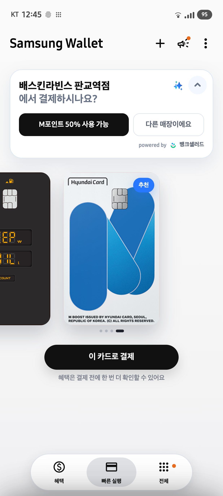
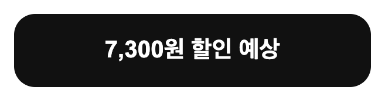
지금 받을 수 있는 혜택을 바로 제안합니다
현재 매장, 보유 카드, 포인트, 멤버십을 함께 확인해 결제 전에 예상 혜택을 먼저 보여줍니다.
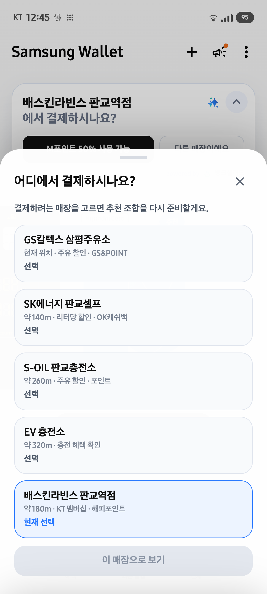
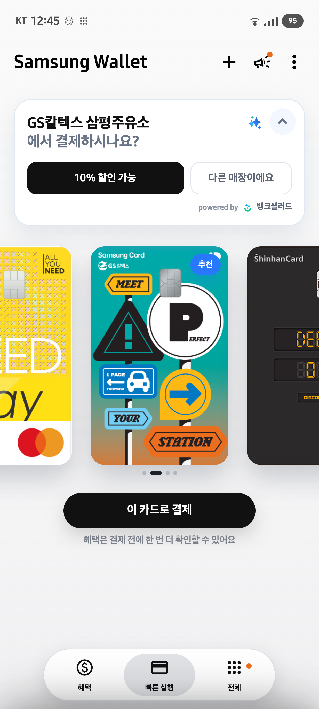
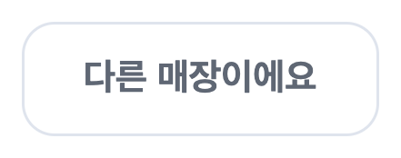
매장이 바뀌면 추천도 다시 계산됩니다
잘못 인식된 위치는 사용자가 직접 바꾸고, 적용 후에만 추천 조합이 변경됩니다.
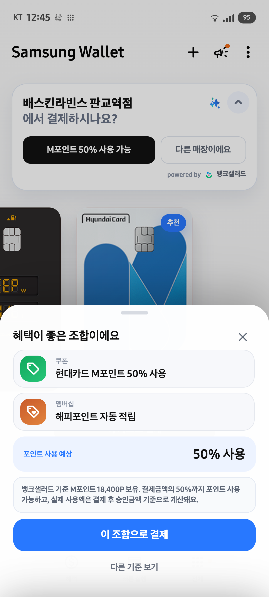
할인, 포인트 사용, 멤버십 적립을 한 번에
사용자가 따로 찾아야 했던 혜택을 하나의 결제 조합으로 정리합니다.
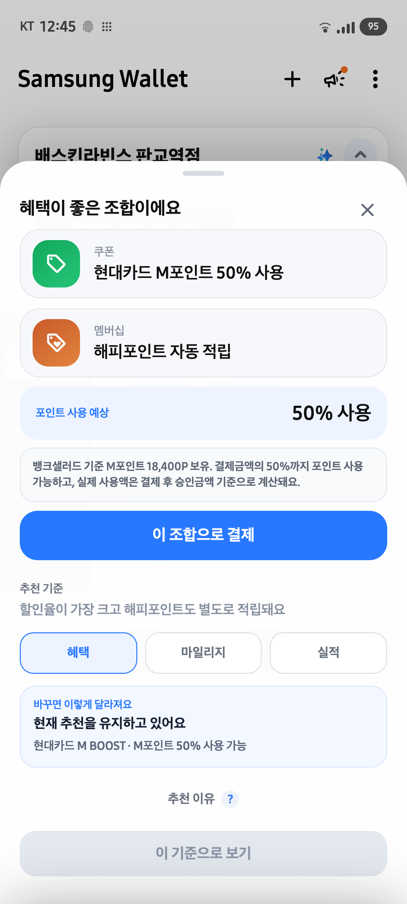
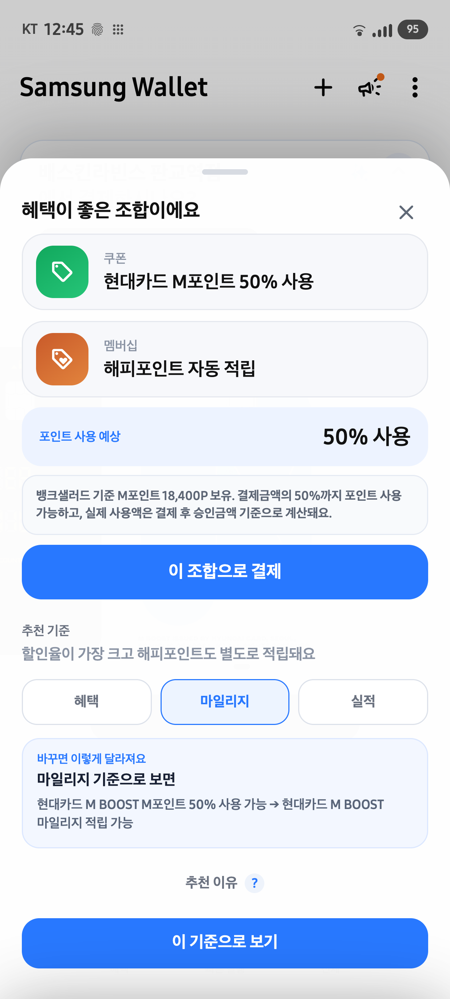
원하는 기준으로 추천을 바꿔볼 수 있습니다
혜택, 마일리지, 실적 기준을 먼저 비교하고 적용을 눌렀을 때만 실제 추천에 반영합니다.
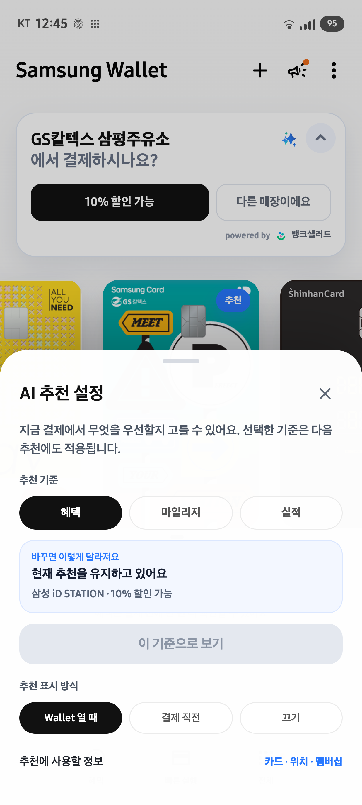
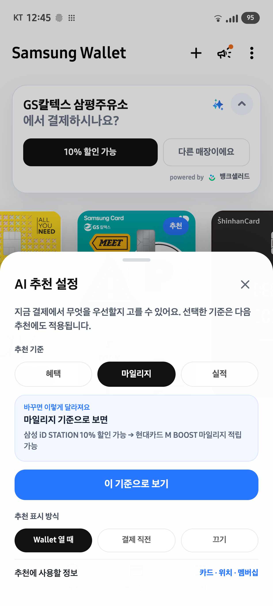
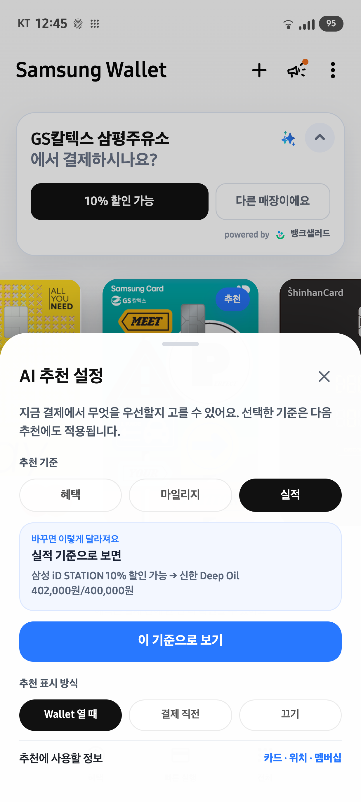
내 결제 습관에 맞게 추천 기준을 설정합니다
혜택 중심, 마일리지 중심, 실적 중심. 선택한 기준은 다음 추천에도 이어집니다.
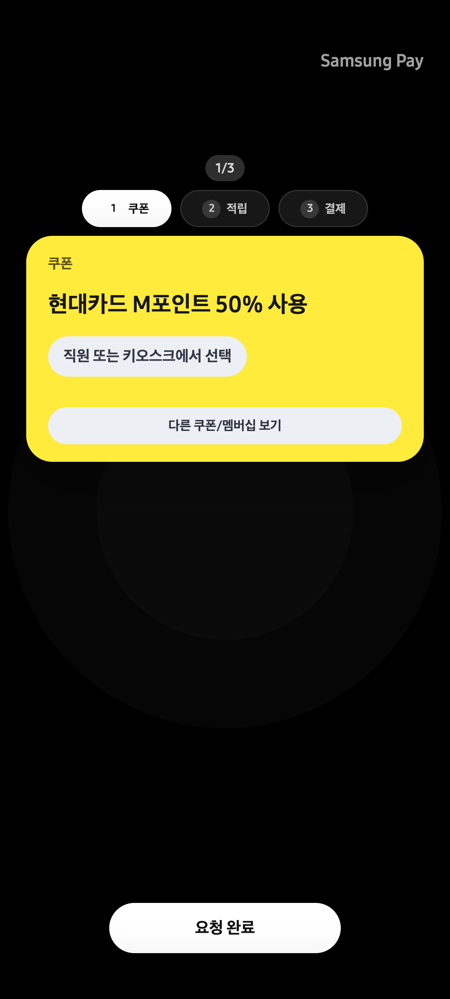
결제 전에 멤버십을 먼저 챙깁니다
해피포인트 바코드를 먼저 보여줘 결제 전 적립을 놓치지 않도록 합니다.
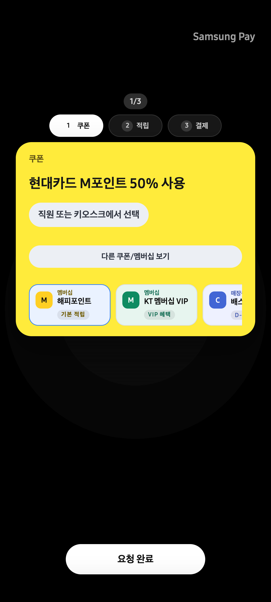
추천에 없던 혜택도 결제 중 바로 꺼냅니다
보유한 쿠폰과 멤버십을 함께 보여주고, 쿠폰은 남은 기간까지 확인할 수 있습니다.
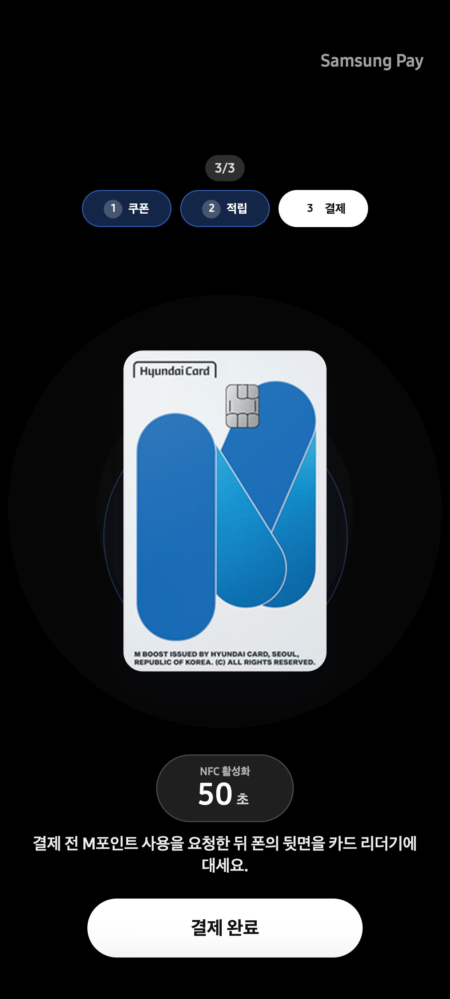
포인트 사용을 안내하고, 바로 결제로 이어집니다
M포인트처럼 결제 단계에서 요청해야 하는 혜택은 NFC 화면에서 다시 알려줍니다.
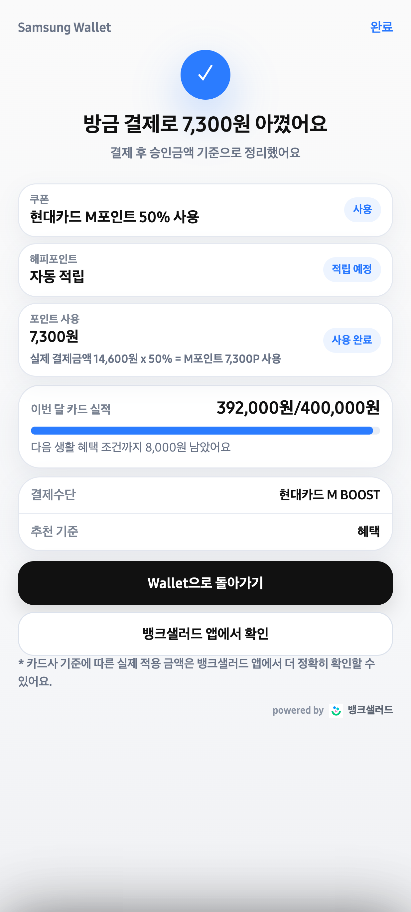
방금 결제로 받은 혜택을 확인합니다
예상 혜택, 결제수단, 이번 달 카드 실적 진행 금액을 결제 직후 보여줍니다.
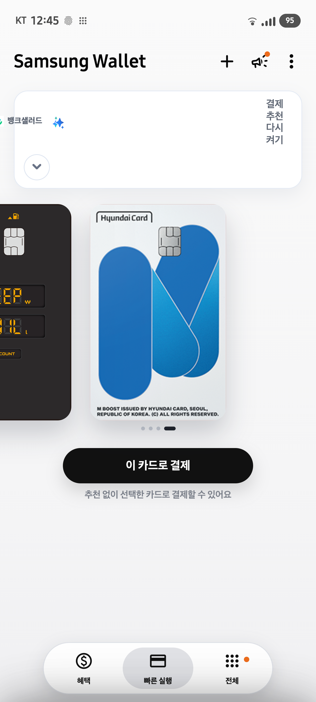
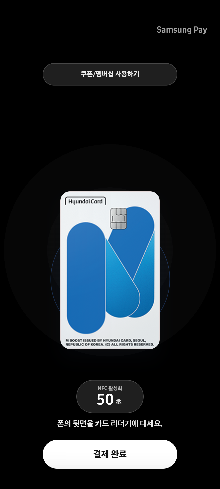
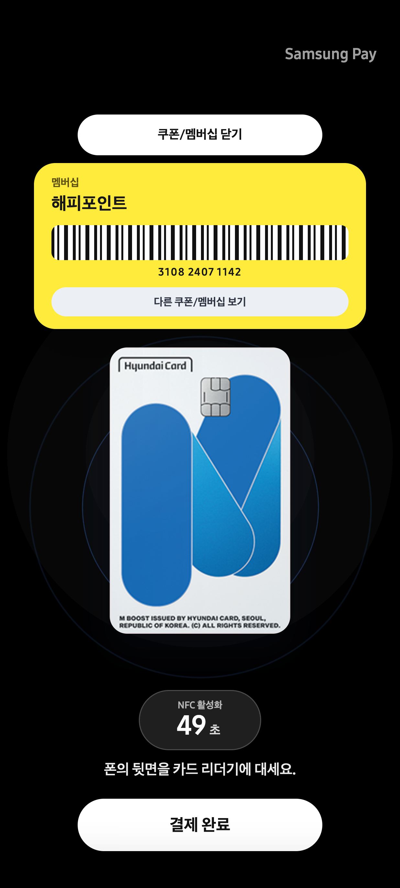
추천은 필요할 때만,
기본 결제는 그대로
SWAP을 접어도 기존처럼 카드 결제 중 쿠폰과 멤버십을 사용할 수 있습니다.
결제의 다음 행동까지
Wallet이 제안합니다
SWAP은 카드 추천을 넘어 쿠폰, 멤버십, 포인트 사용, 결제 순서를 하나의 경험으로 연결합니다.